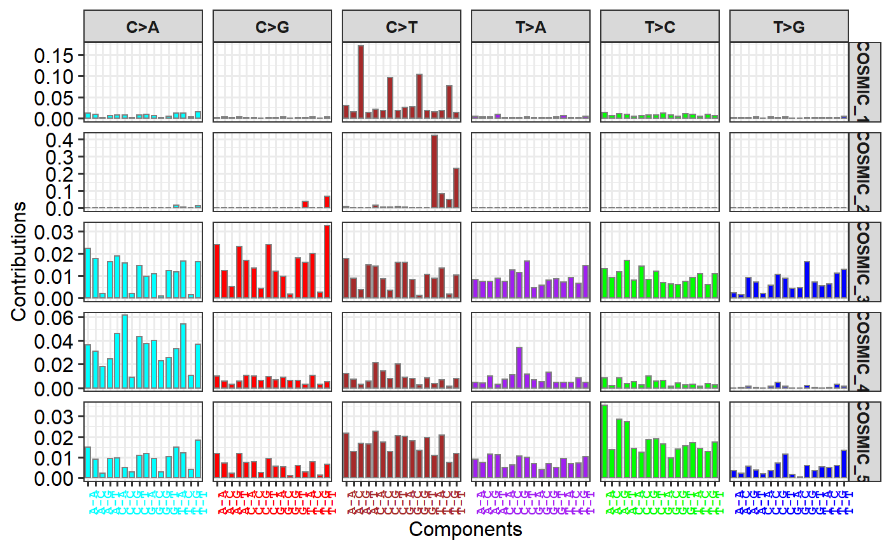
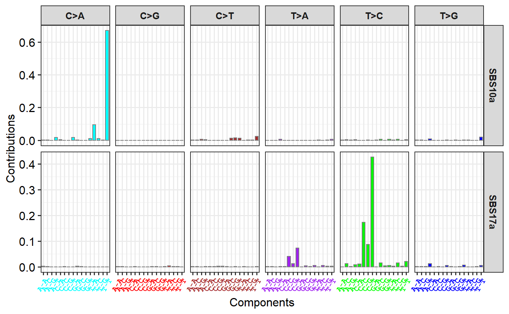

Plot COSMIC Signature Profile
show_cosmic_sig_profile( sig_index = NULL, show_index = TRUE, sig_db = "legacy", ... )
| sig_index | a vector for signature index. "ALL" for all signatures. |
|---|---|
| show_index | if |
| sig_db | can be 'legacy' (for COSMIC v2 'SBS'), 'SBS', 'DBS', 'ID' and 'TSB' (for SBS transcriptional strand bias signatures). Default 'legacy'. |
| ... | other arguments passing to show_sig_profile. |
a ggplot object
show_cosmic_sig_profile()#> #> #>show_cosmic_sig_profile(sig_db = "SBS")#> #> #>show_cosmic_sig_profile(sig_index = 1:5)#> #> #>#> #> #>gg <- show_cosmic_sig_profile(sig_index = 1:5)#> #> #>gg$aetiology#> aetiology #> COSMIC_1 spontaneous deamination of 5-methylcytosine #> COSMIC_2 APOBEC Cytidine Deaminase (C>T) #> COSMIC_3 defects in DNA-DSB repair by HR #> COSMIC_4 exposure to tobacco (smoking) mutagens #> COSMIC_5 Unknown